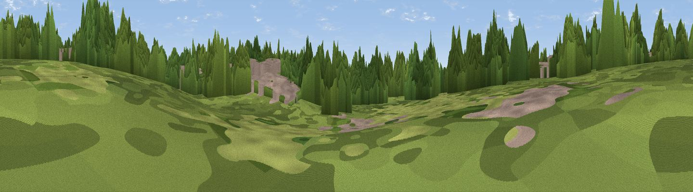

Start Hill
#45817 in England · top 82% of its area beats it · near BirchangerThe view, rendered

A 360° render of this exact spot computed from the terrain model, tree cover and land cover — summer colours, afternoon light, calibrated against photographs of famous viewpoints. Real trees, hedges and buildings will differ in detail.
The panorama
Grey silhouette: terrain skyline in each direction (720 bearings, Earth curvature and refraction included). Dashed green: skyline with trees (+15 m) and buildings (+8 m) as obstacles. Blue strip: how far the ground is visible on each bearing.
Where the view opens
Wedge length = distance to the farthest visible ground on that bearing (vegetation-aware). Rings at 10, 25 and 50 km.
What fills the view
51% woodland · 23% cropland · 14% built-up · 11% grassland
Angular shares of the visible panorama (visual magnitude), not map area. Landscape diversity 0.52 (0–1 Shannon).
Key numbers
More beautiful places nearby
The staircase of upgrades: each row has a higher view potential than everything closer. Driving times are estimates from straight-line distance, calibrated against real road routing — check an actual route before setting out.
| Place | Direction | Drive | Score |
|---|---|---|---|
| Viewpoint near Takeley Street | ENE · 3 km | ~6 min | 22.4 |
| Lovecotes Hill | NNE · 9 km | ~18 min | 23.8 |
| Rye Hill | SSW · 16 km | ~28 min | 29.2 |
| Viewpoint near Great Amwell | WSW · 16 km | ~28 min | 30.8 |
| Viewpoint near Thundridge | WSW · 18 km | ~31 min | 40.8 |
| Viewpoint near Heydon | NNW · 21 km | ~35 min | 50.0 |
| Viewpoint near Royston | NW · 26 km | ~42 min | 56.6 |
| Viewpoint near Horndon On The Hill | SSE · 39 km | ~58 min | 58.8 |
51.87061, 0.20550 · source: osm peak · position refined by local search. Computed location — check access rights before visiting.